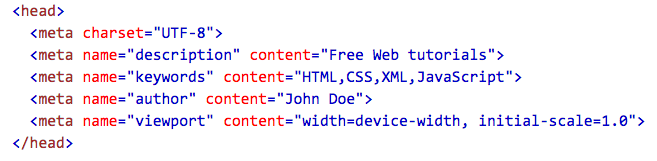

To tell your software to accept special characters you're going to want to use the UTF-8 charset in the
section of your HTML document (first thing because it tells the browser how to interpret your page) like this: Make sure that your HTTP header is also UTF-8.
You'll need to set your database storage (tables, columns, etc) and collation to use UTF-8 charset.
PHP gets a bit more complicated, though. You'll have to use multibyte-safe functions to make sure it works.